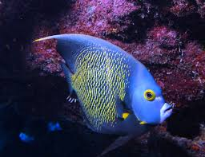
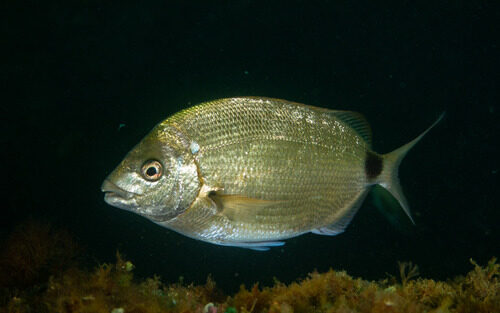
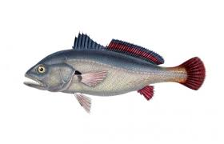

.png)
Canasvieiras
Introdução
A Praia de Canasvieiras, ou balneário de Canasvieiras, se torna, durante o verão, um dos destinos mais movimentados da ilha. Está localizado na região norte, entre a Praia de Jurerê e a Praia da Cachoeira do Bom Jesus. As águas calmas e a infraestrutura da região fazem de Canasvieiras um local para passear em família ou com amigos. É a praia de Florianópolis preferida dos turistas do Cone Sul, um motivo sendo por ser próximo ao centro de Florianópolis e o fácil acesso. Durante a alta temporada, Canasvieiras vira um verdadeiro recanto praiano para famílias e jovens argentinos, uruguaios e paraguaios. Por conta disso, muitos estabelecimentos oferecem serviços bilíngues, e não é difícil inclusive encontrar jornais argentinos. Nas ruas, placas escritas em espanhol e vendedores arriscando o idioma são comuns.
Especies
Parati

http://www.klimanaturali.org/2011/05/peixe-parati-mugil-curema.html
Mugil curema (conhecido também como Parati) é um peixe da família da tainha (Mugilidae), tem por hábito nadar em grupo e em águas rasas. É uma espécie costeira que vive perto da superfície, nas áreas de recifes, praias, estuários e lagoas salobras. Alimenta-se de micro-organismos e algas principalmente. Por ser da família Mugilidae tem um importante valor comercial para Florianópolis em geral, sendo também cultivada em aquicultura.
Peixe Frade
https://pt.wikipedia.org/wiki/Peixe-frade
Pomacanthus paru (conhecido também como peixe paru, peixe frade, peixe anjo francês ou peixe enxada) geralmente pode ser encontrado habitando recifes rasos, lagoas, planícies de recife, cabeças de coral e estacas de cais incrustadas com invertebrados. Esse peixe possui um fator interessante que é sua beleza natural, despertando um grande desejo de mergulhadores ou até mesmo de pessoas com aquários em casa. Eles se alimentam principalmente de esponjas, algas, zoantídeos e gorgônias, e ainda anfípodes, copépodes e outros invertebrados bentônicos.
Carapicu

https://paginasdabio.ufpr.br/carapicu/
Os Eucinostomus gula, popularmente chamados de carapicus como muitas espécies de peixes, possuem cromatóforos (células especializadas que permitem ajustar a sua coloração) , oque permite mudarem a intensidade de seus padrões de cores, os machos podem exibir cores vibrantes para atrair fêmes, podem alterar também sua coloração em resposta a ameaças ou para se misturar com o ambiente, fornecendo-lhes camuflagem contra predadores ou presas. Os carapicus são comumente encontrados nas águas costeiras do Oceano Atlântico ocidental, desde a Flórida até o Brasil, habitando águas rasas, incluindo estuários, baías e fundos arenosos ou lamacentos. Animais onívoros, eles se alimentam de pequenos invertebrados, plâncton e detritos.
Pampo-amarelo

https://portalvidalivre.com/articles/124
Trachinotus carolinus (conhecido também como Pampo verdadeiro e Pampo-Amarelo), este peixe é um tipo de peixe comumente encontrado em águas costeiras rasas, praias arenosas, costões e estuários de água salobra. Tem como principal hábito nadar de maneira livre as vezes sozinho, porém também em pequenos cardumes.
Baiacu

https://olhardigital.com.br/2024/02/12/ciencia-e-espaco/baiacu-e-perigoso-entenda-por-que-peixe-e-venenoso/
Tetraodontidae (conhecido também como baiacu), peixe comumente encontrado em formações coralinas. Tem como principal característica conseguir inflar o seu corpo, fazendo isto engolindo água ou ar, possuem o hábito de buscar alimentos no período noturno em áreas de vegetações marinhas e por fim possuem veneno que já ocasionou vítimas fatais, isso porque atingem os nervos vasomotores causando uma paralisia dos músculos responsáveis pela respiração.
Marimbá
https://paginasdabio.ufpr.br/marimba/
Os Diplodus argenteus, chamados popularmente por marimbás são conhecidos por serem altamente sociais e formarem cardumes que podem consistir de dezenas a centenas de indivíduos nadando juntos em movimentos coordenados, proporcionando-lhes segurança em número e aumentando suas chances de encontrar comida e evitar predadores. Esse peixe pode ser encontrado em todo o litoral brasileiro e da América Central, tanto em águas rasas, como no fundo próximo à corais, rochas e tocas. É uma espécie onívora, o que significa que tem uma dieta variada. Eles se alimentam principalmente de pequenos invertebrados como crustáceos e moluscos encontrados no fundo do mar, bem como algas e outros materiais vegetais. Seu comportamento alimentar envolve a busca de comida perto do substrato e a busca de pequenas presas entre rochas e recifes de coral.
Canhanha

https://pexesdalagoaumaova.blogspot.com/2010/11/peixe-rei_17.html
Archosargus rhomboidalis (conhecido também como canhanha) geralmente é encontrado em fundos de lama, em manguezais e em fundos de areia com vegetação, às vezes em água salobra e ocasionalmente também em áreas de recifes de coral perto de manguezais. Se alimenta de invertebrados bentônicos, e de materia vegetal.
Tainha

https://engeplus.com.br/noticia/economia/2016/epagri-pesquisa-criacao-de-tainhas-em-agua-doce
Mugilidae (conhecido também como tainha), peixe comumente encontrado em águas costeiras e estua-rinas, geralmente em locais rasos em cardumes perto das superfícies. Tem como principal característica ser um grande ativo comercial de várias regiões, como por exemplo Florianópolis, além de ter como ter comportamento migratório sempre se movendo para águas mais quentes durante o período do inverno e retornando ao seu local de reprodução no verão, configurando assim a famosa safra da tainha.
Papa-terra

https://www.borapescar.com/blogs/betara/
Menticirrhus americanos (conhecido também como Papa-Terra ou Betara), peixe comumente encontrado em canais formados nas costas marítimas, geralmente em locais mais fundos, por isso se encaixam como peixes demersais, porém possuem temporadas em que o Papa-Terra se encontra mais perto da beira do mar, geralmente acontecendo isto no verão. Carne muito saboroso de acordo com os amantes de peixes, tem como principal hábito ser um predador, se alimentando de vários tipos de alimentos como pequenos crustáceos, moluscos, camarões, pequenos peixes, entre outros.
Corvina
https://www.cpt.com.br/artigos/peixes-de-agua-doce-do-brasil-corvina-plagioscion-squamosissimus
Plagioscion squamosissimus (conhecido também como Corvina, Pescada-Branca e Pescada-do-Piauí) o Corvina é um peixe que habita poços, remansos e reservatórios, vivendo em lugares fundos e de meia água. Se caracteriza pela coloração prata azulada, boca oblíqua, com um grande número de dentes recurvados e pontiagudos, possui também espinhos nas nadadeiras e duas nadadeiras dorsais. Pode alcançar mais de 50 cm e atingir até os 4,5 kg.
Balneabilidade
A Praia de Canasvieiras, um dos destinos mais populares de Florianópolis, foi dividida em nove trechos principais para avaliação da balneabilidade em 20/05/2024. Todos os trechos foram considerados próprios para banho, com concentrações de coliformes fecais variando entre 41 nmp/100ml e 259 nmp/100ml. No entanto, em 20/03/2024, um dos trechos estava impróprio para banho, atingindo 3076 nmp/100ml. A média geral de coliformes fecais na Praia de Canasvieiras foi de 96,3 nmp/100ml, o que classifica a praia como própria para banho, de acordo com os critérios de balneabilidade. Esses resultados indicam boas condições da água na maior parte dos trechos da Praia de Canasvieiras, oferecendo uma experiência segura e agradável para os banhistas, porém em algumas datas é necessário um cuidado um pouco maior.